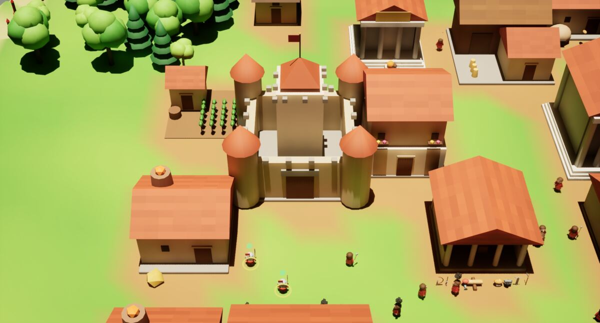

<title>Siedler 3D</title>
<meta name="description" content="Aufbauspiel in 3D nach dem Vorbild von Die Siedler III - kostenlos für Windows und Linux.">
<link rel="preconnect" href="https://fonts.googleapis.com">
<link rel="preconnect" href="https://fonts.gstatic.com" crossorigin>
<link rel="stylesheet" href="https://fonts.googleapis.com/css2?family=Alegreya+SC:wght@500;700;800&family=Alegreya+Sans:ital,wght@0,400;0,500;0,700;1,400&family=IBM+Plex+Mono:wght@400;600&display=swap">
<style>
  /* ---------- Farben: helles Thema ---------- */
  :root{
    --grund:#EDF0E3;
    --flaeche:#F8FAF1;
    --flaeche-2:#E3E9D3;
    --schrift:#1F2A17;
    --gedaempft:#5A6650;
    --linie:#CDD5BC;
    --wiese:#3F6B1F;
    --wiese-hell:#558A2B;
    --wiese-flaeche:#DCE8C6;
    --gold:#9A6F0E;
    --dach:#B5532E;
    --knopf-schrift:#F8FAF1;
    --schatten:0 1px 2px rgba(31,42,23,.07), 0 10px 26px -14px rgba(31,42,23,.25);
  }
  @media (prefers-color-scheme: dark){
    :root:not([data-theme="light"]){
      color-scheme:dark;
      --grund:#121810;
      --flaeche:#1A2217;
      --flaeche-2:#222C1E;
      --schrift:#E6EBDA;
      --gedaempft:#9DA990;
      --linie:#33402C;
      --wiese:#8CC25A;
      --wiese-hell:#A6D677;
      --wiese-flaeche:#22301A;
      --gold:#E2B54A;
      --dach:#E08158;
      --knopf-schrift:#121810;
      --schatten:0 1px 2px rgba(0,0,0,.4), 0 10px 26px -14px rgba(0,0,0,.7);
    }
  }
  :root[data-theme="dark"]{
    color-scheme:dark;
    --grund:#121810;
    --flaeche:#1A2217;
    --flaeche-2:#222C1E;
    --schrift:#E6EBDA;
    --gedaempft:#9DA990;
    --linie:#33402C;
    --wiese:#8CC25A;
    --wiese-hell:#A6D677;
    --wiese-flaeche:#22301A;
    --gold:#E2B54A;
    --dach:#E08158;
    --knopf-schrift:#121810;
    --schatten:0 1px 2px rgba(0,0,0,.4), 0 10px 26px -14px rgba(0,0,0,.7);
  }

  *{box-sizing:border-box}
  body{
    background:var(--grund);color:var(--schrift);
    font-family:"Alegreya Sans","Segoe UI",system-ui,sans-serif;
    font-size:18px;line-height:1.6;-webkit-font-smoothing:antialiased;
  }
  .bahn{max-width:1080px;margin:0 auto;padding-inline:24px}
  h1,h2,h3{font-family:"Alegreya SC",Georgia,serif;text-wrap:balance;margin:0;font-weight:700}
  a{color:var(--wiese)}
  .mono{font-family:"IBM Plex Mono",ui-monospace,monospace}

  /* ---------- Kopf ---------- */
  .kopf{padding-block:44px 8px}
  .kopf-raster{display:grid;grid-template-columns:minmax(0,5fr) minmax(0,7fr);gap:36px;align-items:center}
  .kopf h1{font-size:clamp(3rem,8vw,5.2rem);line-height:.95;letter-spacing:.01em;font-weight:800}
  .kopf h1 span{color:var(--dach)}
  .unterzeile{font-size:1.2rem;color:var(--gedaempft);margin:16px 0 22px;max-width:40ch}
  .kopf-knoepfe{display:flex;flex-wrap:wrap;gap:12px}
  .bild{margin:0;border-radius:6px;overflow:hidden;box-shadow:var(--schatten);border:1px solid var(--linie);background:var(--flaeche-2)}
  .bild img{display:block;width:100%;height:auto}
  .bild figcaption{font-size:.85rem;color:var(--gedaempft);padding:8px 12px}

  .knopf{
    display:inline-block;text-decoration:none;font-family:"Alegreya SC",Georgia,serif;
    font-weight:700;letter-spacing:.04em;font-size:1rem;padding:11px 20px;border-radius:4px;
    background:var(--wiese);color:var(--knopf-schrift);border:1px solid var(--wiese);
    transition:background .15s,transform .1s;text-align:center;
  }
  .knopf:hover{background:var(--wiese-hell);border-color:var(--wiese-hell)}
  .knopf:active{transform:translateY(1px)}
  .knopf:focus-visible,.vchip:focus-visible{outline:2px solid var(--gold);outline-offset:3px}
  .knopf.zweit{background:transparent;color:var(--wiese)}
  .knopf.zweit:hover{background:var(--wiese-flaeche)}
  .knopf.aus{background:transparent;color:var(--gedaempft);border:1px dashed var(--linie);cursor:not-allowed;font-weight:500}

  /* ---------- Zahlenleiste ---------- */
  .zahlen{display:grid;grid-template-columns:repeat(5,minmax(0,1fr));gap:0;margin-top:36px;
    border-block:1px solid var(--linie)}
  .zahl{padding:16px 12px;text-align:center}
  .zahl + .zahl{border-left:1px solid var(--linie)}
  .zahl b{display:block;font-family:"Alegreya SC",Georgia,serif;font-size:2rem;line-height:1.1;color:var(--wiese);font-variant-numeric:tabular-nums}
  .zahl span{font-size:.88rem;color:var(--gedaempft)}

  /* ---------- Abschnitte ---------- */
  section{padding-block:52px}
  section + section{border-top:1px solid var(--linie)}
  .augenbraue{font-family:"IBM Plex Mono",monospace;font-size:.72rem;letter-spacing:.16em;text-transform:uppercase;color:var(--gold);margin:0 0 8px}
  section h2{font-size:2rem;margin-bottom:14px}
  .hinweis{color:var(--gedaempft);max-width:62ch;margin:0 0 24px}

  /* ---------- Versionen + Downloads ---------- */
  .versionen{display:flex;gap:10px;flex-wrap:wrap;margin-bottom:26px}
  .vchip{font-family:"IBM Plex Mono",monospace;background:var(--flaeche);border:1px solid var(--linie);border-radius:4px;
    padding:9px 14px;cursor:pointer;color:var(--schrift);text-align:left;display:flex;flex-direction:column;gap:2px}
  .vchip .nr{font-weight:600;font-variant-numeric:tabular-nums}
  .vchip .dt{font-size:.7rem;color:var(--gedaempft)}
  .vchip[aria-selected="true"]{background:var(--wiese-flaeche);border-color:var(--wiese)}
  .karten{display:grid;grid-template-columns:repeat(auto-fit,minmax(250px,1fr));gap:16px}
  .karte{background:var(--flaeche);border:1px solid var(--linie);border-radius:6px;padding:22px;display:flex;flex-direction:column;gap:14px}
  .karte-kopf{display:flex;align-items:center;gap:12px}
  .karte-kopf svg{flex:none;color:var(--wiese)}
  .karte h3{font-size:1.3rem}
  .zeilen{display:flex;flex-direction:column;gap:6px;font-size:.88rem;margin:0}
  .zeile{display:flex;justify-content:space-between;gap:12px}
  .zeile dt{color:var(--gedaempft)}
  .zeile dd{margin:0;font-family:"IBM Plex Mono",monospace;font-size:.82rem;text-align:right;overflow-wrap:anywhere}
  .karte .knopf{margin-top:auto}
  .neu{margin:26px 0 0;padding:18px 22px;background:var(--flaeche-2);border-radius:6px}
  .neu h3{font-size:1.1rem;margin-bottom:6px}
  .neu ul{margin:0;padding-left:20px}

  /* ---------- Warenkette ---------- */
  .kette{display:flex;flex-wrap:wrap;align-items:center;gap:8px;margin:0 0 10px}
  .glied{padding:6px 12px;border-radius:999px;background:var(--flaeche);border:1px solid var(--linie);font-size:.95rem}
  .glied.ware{background:var(--wiese-flaeche);border-color:transparent;font-weight:500}
  .pfeil{color:var(--gedaempft)}
  .ketten{display:flex;flex-direction:column;gap:12px}

  /* ---------- Merkmale ---------- */
  .raster2{display:grid;grid-template-columns:repeat(2,minmax(0,1fr));gap:28px 40px}
  .merkmal h3{font-size:1.25rem;margin-bottom:4px}
  .merkmal p{margin:0;color:var(--gedaempft)}

  /* ---------- Völker + Missionen ---------- */
  .voelker{display:grid;grid-template-columns:repeat(4,minmax(0,1fr));gap:16px}
  .volk{background:var(--flaeche);border:1px solid var(--linie);border-radius:6px;padding:18px;border-top:4px solid var(--farbe)}
  .volk h3{font-size:1.25rem;margin-bottom:8px}
  .volk ol{margin:0;padding-left:20px;font-size:.95rem}
  .volk li + li{margin-top:4px}
  .volk .trank{font-size:.82rem;color:var(--gedaempft);margin:10px 0 0}

  /* ---------- Steuerung ---------- */
  .tabelle-huelle{overflow-x:auto}
  table{border-collapse:collapse;width:100%;font-size:.98rem}
  td{padding:9px 12px;border-bottom:1px solid var(--linie);vertical-align:top}
  td:first-child{white-space:nowrap;width:1%}
  kbd{font-family:"IBM Plex Mono",monospace;font-size:.8rem;background:var(--flaeche);border:1px solid var(--linie);
    border-bottom-width:2px;border-radius:4px;padding:2px 7px}

  .schritte{margin:0;padding-left:22px}
  .schritte li + li{margin-top:8px}
  code{font-family:"IBM Plex Mono",monospace;font-size:.85em;background:var(--flaeche-2);padding:1px 5px;border-radius:3px}

  footer{padding-block:30px 46px;border-top:1px solid var(--linie);color:var(--gedaempft);font-size:.9rem}

  @media (max-width:820px){
    .kopf-raster,.raster2{grid-template-columns:1fr}
    .voelker{grid-template-columns:repeat(2,minmax(0,1fr))}
    .zahlen{grid-template-columns:repeat(3,minmax(0,1fr))}
    .zahl:nth-child(4){border-left:none}
    .zahl:nth-child(n+4){border-top:1px solid var(--linie)}
  }
  @media (max-width:480px){
    .voelker{grid-template-columns:1fr}
    .zahlen{grid-template-columns:repeat(2,minmax(0,1fr))}
    .zahl:nth-child(3),.zahl:nth-child(5){border-left:none}
    .zahl:nth-child(n+3){border-top:1px solid var(--linie)}
    .zahl:nth-child(4){border-left:1px solid var(--linie)}
  }
</style>

<header class="kopf">
  <div class="bahn">
    <div class="kopf-raster">
      <div>
        <h1>Siedler <span>3D</span></h1>
        <p class="unterzeile">Baue ein Dorf, das zum Reich wird. Holz, Stein, Brot und Gold in langen Warenketten, wie beim alten Siedler&nbsp;III, nur in 3D.</p>
        <div class="kopf-knoepfe">
          <a class="knopf" href="#herunterladen">Herunterladen</a>
          <a class="knopf zweit" href="#steuerung">Steuerung</a>
        </div>
      </div>
      <figure class="bild">
        
        <figcaption>Eine römische Siedlung nach einer halben Stunde</figcaption>
      </figure>
    </div>
    <div class="zahlen">
      <div class="zahl"><b>4</b><span>Völker</span></div>
      <div class="zahl"><b>12</b><span>Missionen</span></div>
      <div class="zahl"><b>8</b><span>Spieler pro Karte</span></div>
      <div class="zahl"><b>5</b><span>Weltentypen</span></div>
      <div class="zahl"><b>256²</b><span>Felder, grösste Karte</span></div>
    </div>
  </div>
</header>

<main>
  <section id="herunterladen">
    <div class="bahn">
      <p class="augenbraue">Kostenlos</p>
      <h2>Herunterladen</h2>
      <p class="hinweis">Entpacken und starten, es wird nichts installiert. Du brauchst eine Grafikkarte, die DirectX&nbsp;12 oder Vulkan kann, und etwa 1&nbsp;GB freien Platz.</p>
      <div class="versionen" id="versionen" role="tablist" aria-label="Version"></div>
      <div class="karten" id="karten"></div>
      <div class="neu" id="neu"></div>
    </div>
  </section>

  <section>
    <div class="bahn">
      <p class="augenbraue">Die Wirtschaft</p>
      <h2>Jede Ware hat ihren Weg</h2>
      <p class="hinweis">Träger bringen jede Ware einzeln von Haus zu Haus. Ein Beruf beginnt erst, wenn sein Werkzeug im Lager liegt, so wie im Original.</p>
      <div class="ketten">
        <div class="kette"><span class="glied">Holzfäller</span><span class="pfeil">→</span><span class="glied ware">Baumstamm</span><span class="pfeil">→</span><span class="glied">Sägewerk</span><span class="pfeil">→</span><span class="glied ware">Bretter</span></div>
        <div class="kette"><span class="glied">Bauer</span><span class="pfeil">→</span><span class="glied ware">Getreide</span><span class="pfeil">→</span><span class="glied">Mühle</span><span class="pfeil">→</span><span class="glied ware">Mehl</span><span class="pfeil">+</span><span class="glied ware">Wasser</span><span class="pfeil">→</span><span class="glied">Bäckerei</span><span class="pfeil">→</span><span class="glied ware">Brot</span></div>
        <div class="kette"><span class="glied">Goldmine</span><span class="pfeil">→</span><span class="glied ware">Golderz</span><span class="pfeil">+</span><span class="glied ware">Kohle</span><span class="pfeil">→</span><span class="glied">Goldschmelze</span><span class="pfeil">→</span><span class="glied ware">Goldbarren</span><span class="pfeil">→</span><span class="glied">stärkere Soldaten</span></div>
        <div class="kette"><span class="glied">Eisenerz</span><span class="pfeil">+</span><span class="glied ware">Kohle</span><span class="pfeil">→</span><span class="glied">Eisenschmelze</span><span class="pfeil">→</span><span class="glied ware">Eisen</span><span class="pfeil">→</span><span class="glied">Waffenschmied</span><span class="pfeil">→</span><span class="glied ware">Schwert, Bogen</span></div>
      </div>
    </div>
  </section>

  <section>
    <div class="bahn">
      <p class="augenbraue">Im Spiel</p>
      <h2>Was dich erwartet</h2>
      <div class="raster2">
        <div class="merkmal"><h3>Alle Gebäude</h3><p>Holzfäller bis Katapultwerkstatt, Wohnhäuser, Türme, Burgen, Hafen, Werft und Marktplatz. Pionier, Geologe und Dieb als Spezialisten.</p></div>
        <div class="merkmal"><h3>Götter und Mana</h3><p>Opfere im Tempel. Mit Mana beförderst du ganze Truppen oder sprichst Zauber: Wachstum, Gold aus Stein, Heilung, Blitz.</p></div>
        <div class="merkmal"><h3>Freunde und Feinde</h3><p>Bis zu sieben Gegner und Verbündete, jeder mit eigener Farbe. Verbündete teilen ihre Sicht, Feinde rücken mit Wellen vor.</p></div>
        <div class="merkmal"><h3>Viele Welten</h3><p>Festland, Inseln, Hochland, Flusstal oder Wüste, in drei Grössen. Mal ein reicher, mal ein karger Start.</p></div>
        <div class="merkmal"><h3>Schiffe</h3><p>Die Werft baut Schiffe aus Brettern. Soldaten steigen ein, fahren über das Wasser und gehen drüben an Land.</p></div>
        <div class="merkmal"><h3>Leben im Dorf</h3><p>Axtschläge, Hammer und Säge, Vogelgezwitscher, Lautenmusik, Rauch aus den Kaminen und warmes Nachmittagslicht.</p></div>
      </div>
    </div>
  </section>

  <section>
    <div class="bahn">
      <p class="augenbraue">Kampagne</p>
      <h2>Vier Völker, zwölf Missionen</h2>
      <p class="hinweis">Jedes Volk hat eigene Bauformen, ein eigenes Getränk und drei Missionen. Eine Mission schaltet die nächste frei.</p>
      <div class="voelker">
        <div class="volk" style="--farbe:#B5532E"><h3>Römer</h3><ol><li>Die neue Provinz</li><li>Wein für Jupiter</li><li>Die Grenzfeste</li></ol><p class="trank">Ziegeldächer · Wein</p></div>
        <div class="volk" style="--farbe:#C9A23C"><h3>Ägypter</h3><ol><li>Am Ufer des Nils</li><li>Das Gold der Pharaonen</li><li>Sand und Speere</li></ol><p class="trank">Flachdächer · Bier</p></div>
        <div class="volk" style="--farbe:#B23A3A"><h3>Asiaten</h3><ol><li>Reis und Ruhm</li><li>Die Inselwacht</li><li>Der Drache erwacht</li></ol><p class="trank">Pagoden · Reisschnaps</p></div>
        <div class="volk" style="--farbe:#4F8A3A"><h3>Amazonen</h3><ol><li>Honig und Met</li><li>Im Wald der Kriegerinnen</li><li>Die letzte Schlacht</li></ol><p class="trank">Strohdächer · Met</p></div>
      </div>
    </div>
  </section>

  <section id="steuerung">
    <div class="bahn">
      <p class="augenbraue">Tasten</p>
      <h2>Steuerung</h2>
      <div class="tabelle-huelle">
        <table>
          <tr><td><kbd>W</kbd> <kbd>A</kbd> <kbd>S</kbd> <kbd>D</kbd></td><td>Karte verschieben, auch mit den Pfeiltasten oder am Bildschirmrand</td></tr>
          <tr><td><kbd>Q</kbd> <kbd>E</kbd></td><td>Blick drehen</td></tr>
          <tr><td>Mausrad</td><td>Näher heran oder weiter weg</td></tr>
          <tr><td>Linke Maustaste</td><td>Auswählen, mit gedrückter Taste einen Rahmen um mehrere Einheiten ziehen</td></tr>
          <tr><td>Rechte Maustaste</td><td>Befehl geben: hingehen, angreifen, Turm besetzen, ins Schiff steigen</td></tr>
          <tr><td><kbd>1</kbd> … <kbd>9</kbd></td><td>Gebäude aus dem Baumenü wählen</td></tr>
          <tr><td><kbd>U</kbd></td><td>Schiff ausladen</td></tr>
          <tr><td><kbd>M</kbd></td><td>Musik ein oder aus</td></tr>
          <tr><td><kbd>Esc</kbd></td><td>Pausenmenü mit Speichern und Laden</td></tr>
        </table>
      </div>
    </div>
  </section>

  <section>
    <div class="bahn raster2">
      <div>
        <p class="augenbraue">Windows</p>
        <h2>So startest du</h2>
        <ol class="schritte">
          <li>ZIP-Datei herunterladen und mit Rechtsklick → <i>Alle extrahieren</i> entpacken.</li>
          <li><code>Siedler.exe</code> doppelklicken.</li>
          <li>Warnt Windows mit „Der Computer wurde durch Windows geschützt“, auf <i>Weitere Informationen</i> → <i>Trotzdem ausführen</i> klicken. Das Spiel ist nicht signiert.</li>
        </ol>
      </div>
      <div>
        <p class="augenbraue">Linux</p>
        <h2>So startest du</h2>
        <ol class="schritte">
          <li>Archiv herunterladen und entpacken: <code>tar xf Siedler-*-Linux.tar.gz</code></li>
          <li>Im Ordner <code>./Siedler.sh</code> starten.</li>
          <li>Läuft mit Vulkan. Ein aktueller Grafiktreiber reicht.</li>
        </ol>
      </div>
    </div>
  </section>
</main>

<footer>
  <div class="bahn">
    Ein Fan-Projekt, gebaut mit Unreal Engine&nbsp;5.8. Nach dem Vorbild von „Die Siedler&nbsp;III“, aber nicht mit Ubisoft oder Blue Byte verbunden. Modelle, Klänge, Musik und Missionen sind selbst gemacht.
  </div>
</footer>

<script>
/* =====================================================================
   HIER VERSIONEN EINTRAGEN
   Neue Version: einen Block GANZ OBEN in die Liste setzen.
   url: null  ->  der Knopf ist grau und zeigt den Text aus "status".
   ===================================================================== */
const VERSIONEN = [
  {
    nr: "0.1.0",
    datum: "2026-10-31",
    neu: [
      "Erste Fassung zum Herunterladen.",
      "Alle Gebäude und Warenketten, vier Völker, Kampagne mit zwölf Missionen.",
      "Freies Spiel mit bis zu acht Spielern auf fünf Weltentypen in drei Grössen.",
      "Schiffe, Götter und Mana, Klänge, Musik und Kaminrauch."
    ],
    dateien: {
      windows: { url:null, datei:"Siedler-0.1.0-Windows.zip",   groesse:"—", status:"Wird gerade gebaut" },
      linux:   { url:null, datei:"Siedler-0.1.0-Linux.tar.gz",  groesse:"—", status:"Wird gerade gebaut" },
      macos:   { url:null, datei:"Siedler-0.1.0-macOS.dmg",     groesse:"—", status:"Braucht einen Mac" }
    }
  }
];

const PLATTFORMEN = [
  { schluessel:"windows", name:"Windows", system:"Windows 10 oder 11, 64 Bit",
    icon:'<svg width="28" height="28" viewBox="0 0 24 24" fill="currentColor" aria-hidden="true"><path d="M3 5.5 10 4.5v7H3zM11 4.3 21 3v8.5H11zM3 12.5h7v7L3 18.5zM11 12.5h10V21l-10-1.4z"/></svg>' },
  { schluessel:"linux", name:"Linux", system:"x86-64, Vulkan",
    icon:'<svg width="28" height="28" viewBox="0 0 24 24" fill="none" stroke="currentColor" stroke-width="1.8" aria-hidden="true"><rect x="3" y="4" width="18" height="14" rx="2"/><path d="m7 9 3 2-3 2M12 14h5"/></svg>' },
  { schluessel:"macos", name:"macOS", system:"Apple",
    icon:'<svg width="28" height="28" viewBox="0 0 24 24" fill="none" stroke="currentColor" stroke-width="1.8" aria-hidden="true"><rect x="3" y="4" width="18" height="12" rx="2"/><path d="M8 20h8M12 16v4"/></svg>' }
];

const leiste = document.getElementById("versionen");
const karten = document.getElementById("karten");
const neu = document.getElementById("neu");

function datumLang(iso){
  const [j,m,t] = iso.split("-").map(Number);
  const monate = ["Januar","Februar","März","April","Mai","Juni","Juli","August","September","Oktober","November","Dezember"];
  return t + ". " + monate[m-1] + " " + j;
}

function zeige(i){
  [...leiste.children].forEach((b,k) => b.setAttribute("aria-selected", k === i ? "true" : "false"));
  const v = VERSIONEN[i];
  karten.innerHTML = "";
  PLATTFORMEN.forEach(p => {
    const d = v.dateien[p.schluessel] || {};
    const k = document.createElement("article");
    k.className = "karte";
    const knopf = d.url
      ? '<a class="knopf" href="' + d.url + '">Für ' + p.name + ' laden</a>'
      : '<span class="knopf aus" aria-disabled="true">' + (d.status || "Noch nicht verfügbar") + '</span>';
    k.innerHTML =
      '<div class="karte-kopf">' + p.icon + '<h3>' + p.name + '</h3></div>' +
      '<dl class="zeilen">' +
        '<div class="zeile"><dt>System</dt><dd>' + p.system + '</dd></div>' +
        '<div class="zeile"><dt>Datei</dt><dd>' + (d.datei || "—") + '</dd></div>' +
        '<div class="zeile"><dt>Grösse</dt><dd>' + (d.groesse || "—") + '</dd></div>' +
      '</dl>' + knopf;
    karten.appendChild(k);
  });
  neu.innerHTML = '<h3>Neu in ' + v.nr + '</h3><ul>' + v.neu.map(s => '<li>' + s + '</li>').join("") + '</ul>';
}

VERSIONEN.forEach((v,i) => {
  const b = document.createElement("button");
  b.type = "button"; b.className = "vchip"; b.setAttribute("role","tab");
  b.innerHTML = '<span class="nr">' + v.nr + '</span><span class="dt">' + (i === 0 ? "neuste · " : "") + datumLang(v.datum) + '</span>';
  b.addEventListener("click", () => zeige(i));
  leiste.appendChild(b);
});
zeige(0);
</script>
